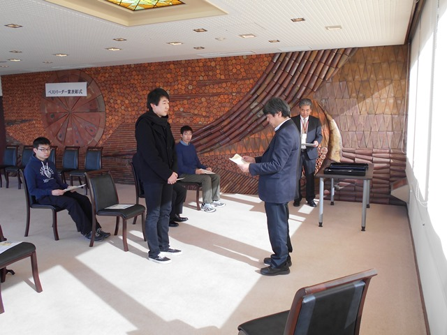

|
表彰式の様子
|
|

|
2016年度のベストリーダー賞表彰式を、平成29年1月13日（金）10:30〜、岡山理科大学A2号館８階ラウンジにて開催しました。
当日は、欠席者9名を除く受賞者6名が参加し、榊原道夫図書館長より、表彰状と副賞の図書カードが授与されました。
大賞では、全分野で1位を応用物理学科の鈴木英人君が独占受賞しました。
新人賞は、理工系と人文・社会科学の１位を化学科の岩崎賢君がＷ受賞しました。
|
表彰式後、ベストリーダー賞受賞者と、図書館職員との懇談会を行い、受賞の感想や図書館への要望などが談義されました。
|
| 大賞受賞者の感想 |
|
全分野1位
鈴木 英人
|
Q 受賞しての感想
A 大学生のやるべき「仕事」は、講義を漫然と聞くことではなく、講義をイントロダクションにして本を読むことのはずなので、それをやってきただけです。
Q 受賞の秘訣は？
A 自分の専門をあらかじめ決めてしまわないで、もっと強欲に広い範囲の本を読む。
|
|
理工系2位
岩崎 弘史
|
Q 受賞してのご感想は？
A 私自身はそんなに本を借りた覚えがないので、あまり受賞の実感は湧きませんが、大変光栄に思います。
Q 受賞の秘訣は？
A 一つ挙げるとすれば、自分の専門分野に興味をもつのはもちろんの事、様々な分野についても広く関心を抱くことでしょうか。
|
| 大賞受賞者の推薦本 |
|---|
| 書名 | 推薦の理由 |
|---|
相対性理論入門、相対性理論、一般相対性理論 / 内山 龍雄
|
前から易→中→難になっていて、3冊目は専門的に身を入れて勉強しなければとても読めないので、中のものをとりあえずの目標として勉強するといい。ちなみに著者はこの分野の権威でノーベル賞にも近かったとか。
|
ヴォート基礎生化学
|
生化学の本はレーニンジャー、ストライヤー、ヴォート生化学上下等ありますが、この本はその中でも基礎に重点を置く名著であり、内容がコンパクト、図表がカラーと初学者のことを良く考え作られていることや、飽きさせないようなコラムがあることを評価しました。
|
病気が見えるシリーズ
|
医療関係に関わる学部や仕事に就く方には、とても良い本だと思います。一つ一つ詳しく病気のメカニズムなどが掲載されているため、理解を深めるには丁度良い。
|
はじめての物理数学 / 石川 洋
|
物理を学ぶ上での基礎が身に付き、さらに勉強を進める上での足掛かりになるから。 |
数学で美人になる / 桜井 進
|
数学に関心がない人でも気軽に読むことができる内容なのに、実は数学がかくれているというものなので読んでいて面白い。
|
もやしもん / 石川 雅之
|
漫画なのですが、中身の内容は微生物に関することでおもしろく詳しく書かれており、勉強にもなるし、楽しめるため。
|
読書の技法 / 佐藤 優
|
速読と精読の技術について書かれており、本を読む技術が1冊にまとめられている。本から知識を身に着ける上で必要な1冊だと思う。 |
置かれた場所で咲きなさい / 渡辺 和子
|
心にグッとくる言葉がたくさん書かれていて、人それずれ何か感じるものがあると思うから。 |
名指しと必然性 / ソール・クリプキ
|
現在の最新の学問全般に影響を与え、この本を前提になっている。なので当然難解だが、ユニークな例が出てきて面白い。
|
単純な脳、複雑な「私」 / 池谷 裕二
|
脳科学の最前線の話を、高校生への講義と題して分かりやすく、おもしろく伝える良書。脳により心が構築される仕組みの謎に迫っている。
|
| 新人賞受賞者の感想 |
|
理工系3位
村松 光汰
|
Q 受賞してのご感想は？
A 正直、僕は普通に本を読んでいたと思っていたので、信じられない気持ちでいっぱいです。でも僕の受賞が後輩たちに少しでも本を読むきっかけを作ってくれるとうれしいです。ありがとうございました。
|
|
人文・社会科学2位
岩崎 弘史
|
Q 受賞してのご感想は？
A このような賞をいただいて驚きとともに光栄に思います。
Q 受賞の秘訣は？
A 特にありません。
|
| 新人賞受賞者の推薦本 |
|---|
| 書名 | 推薦の理由 |
|---|
| 進化 生命のたどる道 / カール・ジンマー |
「進化」について、さまざまな視点や実験で検証しており、「進化」について、もっと深く探求できる。
|
| 寿命図鑑 / やまぐち かおり |
生命や物質や天体などのあらゆるものの寿命について書かれていて、とても面白かった。僕はこの本を読んで、生活を見直すきっかけとなった。
|
| 探偵ガリレオ / 東野 圭吾 |
科学を題材にしたミステリーで理大にぴったりだと思うから。
|
| 理科大学図書館の良さと利用した印象 |
・新たに、A1号館ができたことにより、静かに本を読んだり、勉強が行えるスペースが増えたこと、また、グループ学習室などを設けているので、色々な用途に使用でき、各イベントなどにも対応が可能なこと。
・広くリラックスしやすい場所。
・専門書から一般書まで幅広くたくさんの本があるところ。
・資料がとても充実している。
・パソコンなどの設備が整っており、高校生でも使いやすい雰囲気であること。
・複数に図書館が分かれていて、用途によって使い分けることができ、それでいて図書館そのものが広く、使い易いスペースになっている点。
・他の大学の図書館の事情があまりわからないが、理数系の図書を読もうと思えば、複数ある図書を辿って勉強するには、困らない蔵書数。
・年間を通じて1人が借りられる本の数が多いので、気軽に本を借りやすく、返却期限も長いので安心して読めるところ。土日や比較的遅くまで開館している上、雑誌や専門書の数も比較的多い所や、図書館にない本を比較的早く取り寄せてくださるので、ありがたいところだと思います。
・のんびり過ごせる場所。
・本や雑誌等に囲まれて、静かに落ち着けるところ。
・一番身近な図書館。
・行きたくなってしまう場所。
・打ち付ける場所。
・一人ひとりがそれぞれ研究したいテーマを集中して学習できる場所だと思います。
・落ち着いて過ごせる場所。
・一言でいえば「思考の外部化装置」。ノートのように自分の内にあるものを外に書き出すように複数ある図書に自分の思考をあずけて考え続けれた場所でした。
・とても居心地の良いスペースです。資料探しや、雑誌の新刊等の読書、勉強もできるので、とてもありがたいです。
・理大生の人の多さはすごいけれど、図書館だったらゆっくり過ごせる。あまりテスト期間以外だと混まないから。
|